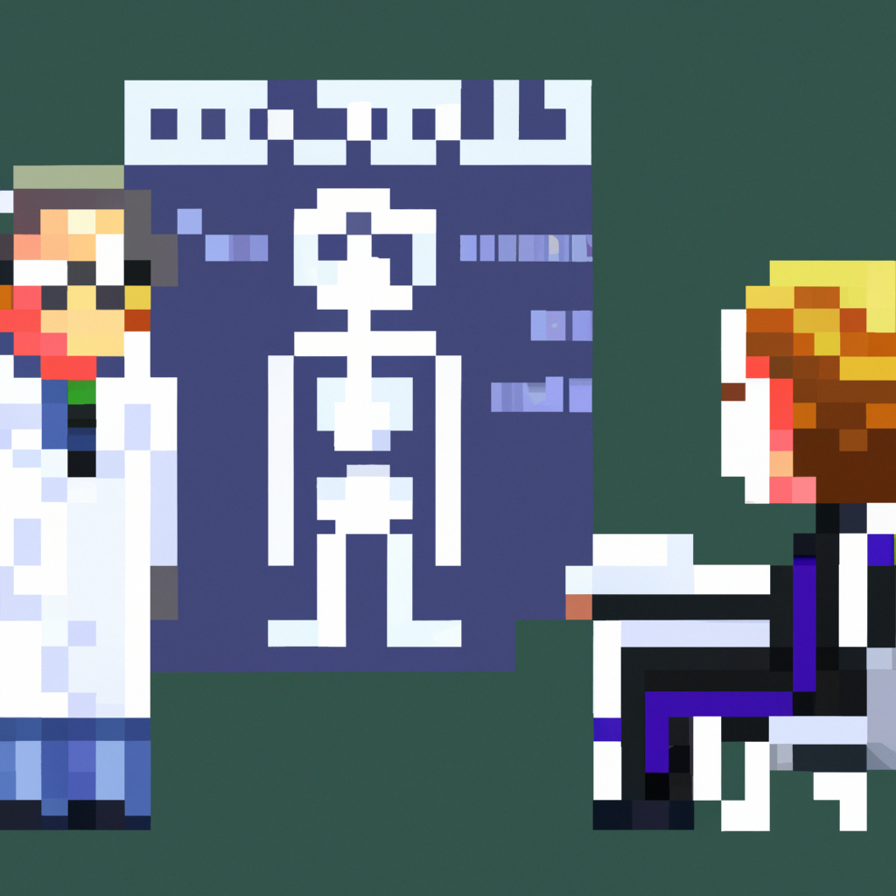

Why AI will never replace the radiologist
The rise of artificial intelligence (AI) has brought about a lot of talk about how it could revolutionize the medical industry and even replace radiologists. While AI can certainly help radiologists make faster and more accurate diagnoses, there are some limitations to the technology that mean it will never fully replace radiologists and the expertise they have.
First, AI is only as good as the data that it is given. If the data set used to train the AI is incomplete or inaccurate, then the AI’s diagnoses will also be incomplete or inaccurate. Radiologists, by comparison, are able to examine images more thoroughly and make more accurate diagnoses.
Second, AI is not able to fully comprehend the subtle nuances of a patient’s medical history that a radiologist can. Radiologists are able to take into account a patient’s medical history, lifestyle, and other variables that a machine may not be able to understand. This makes them more capable of making an accurate diagnosis.
Third, AI is not able to interpret the complex relationship between the human body, its organs, and its systems. This means that it is unable to detect subtle changes that may indicate a problem or a symptom of a disease. Radiologists are able to recognize these changes and can make a more accurate diagnosis as a result.
Finally, AI is not able to provide the same level of care and compassion as a radiologist. Radiologists understand the importance of making an accurate diagnosis and providing quality care to their patients. AI may be able to make diagnoses with greater speed and accuracy, but it will never be able to provide the human touch that is so important when providing medical care.
In conclusion, AI will undoubtedly help radiologists make faster and more accurate diagnoses. However, it won’t ever be able to fully replace them. Radiologists will always be needed to provide the expert care and compassion that AI can’t.